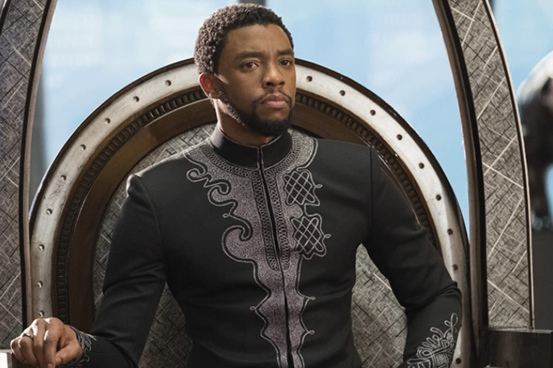

 Chadwick Aaron Boseman adalah aktor asal Amerika Serikat. Setelah menuntut ilmu penyutradaraan di Universitas Howard, dia terkenal di kancah teater dengan memenangi Drama League Directing Fellowship dan akting AUDELCO, dan dinominasikan untuk Jeff Award sebagai penulis naskah lewat Deep Azure.